医療職のための、道具と経営ゲーム
病院の外にも、町がある
真ん中に、いつもの職場の病院。まわりに、まだ行ったことのない仕事の建物があります。
建物にふれると、中がひらきます
町の案内
町の建物ごとに、医療職のための道具と経営ゲームが置いてあります。すべての道具を一覧で見る29
-
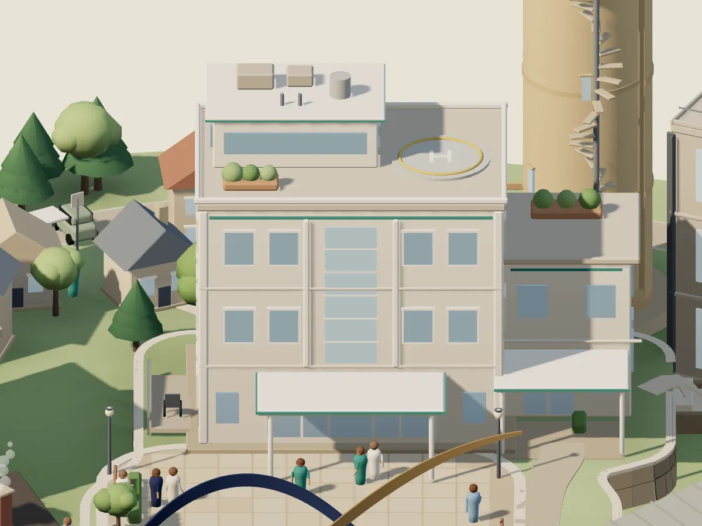
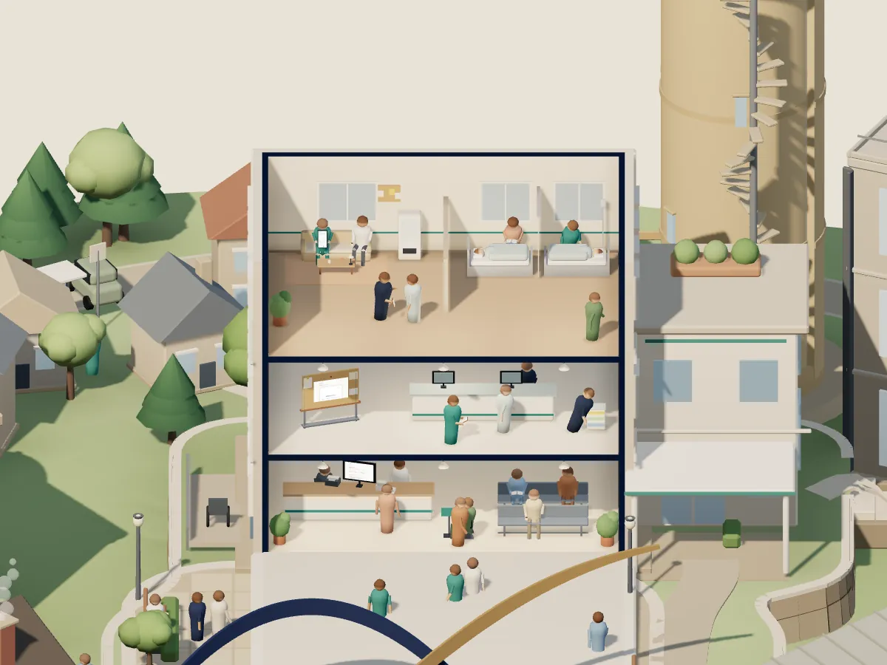
病院いつもの職場
明日の業務を楽にする
-
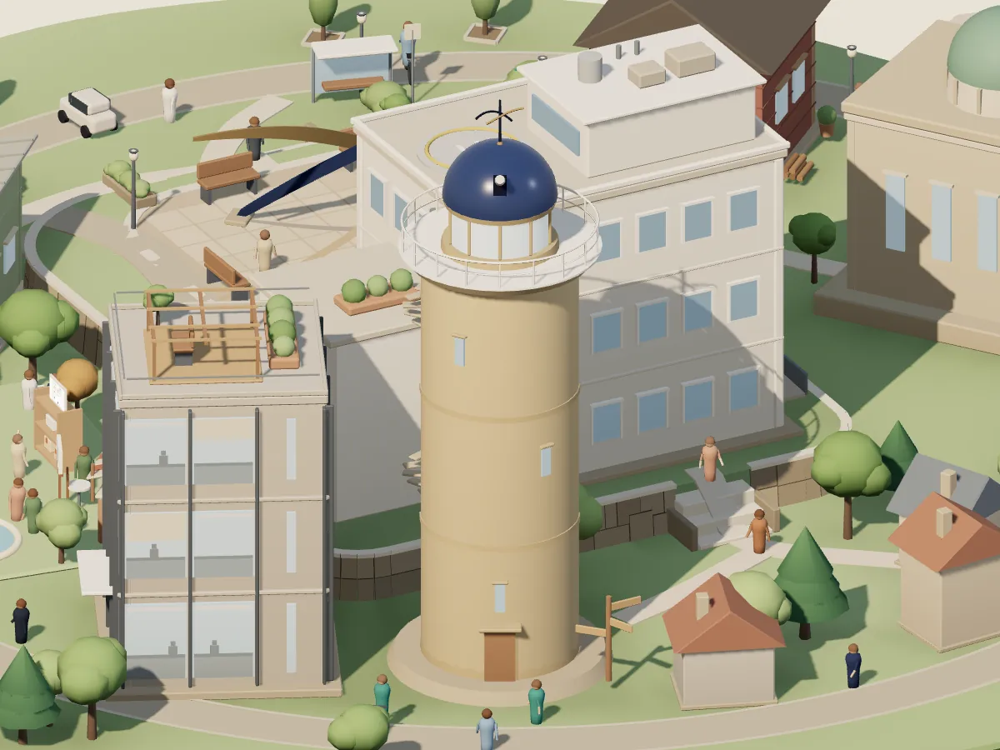
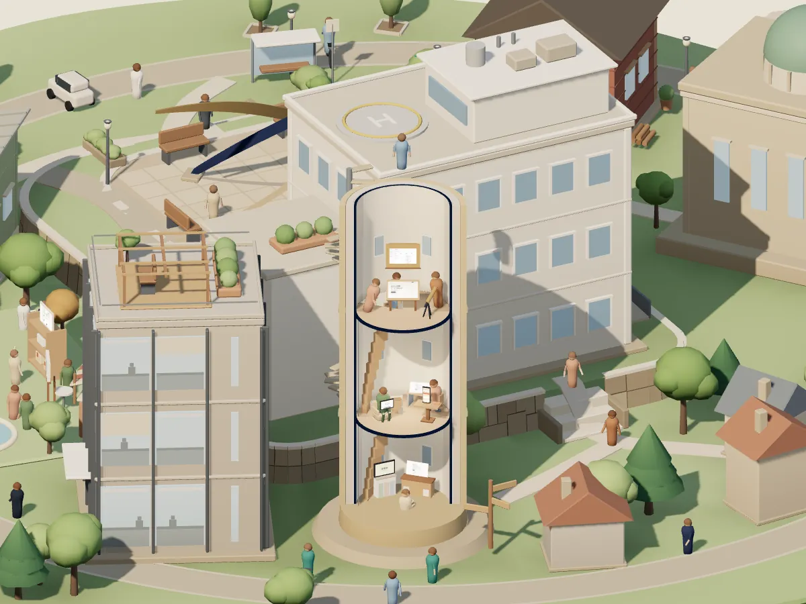
展望台キャリアの地図
キャリア・経験を整理する
- BRIDGE Compass10の質問で、これまでの経験を別の言葉に翻訳する ・ 10の質問・約3分・登録不要
- 経験の棚卸し18の質問で、職務経歴書のたねをつくる
- 現場のことば 言いかえ帳現場のことばを、履歴書で通じる言葉に
ほかの道具4
-
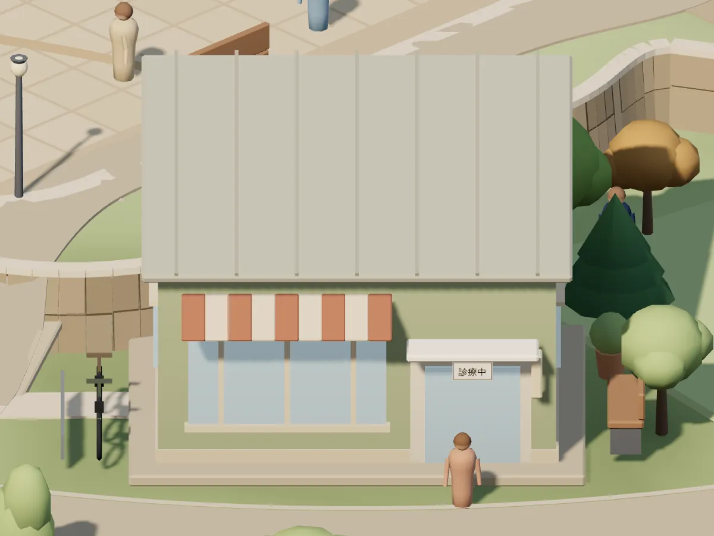
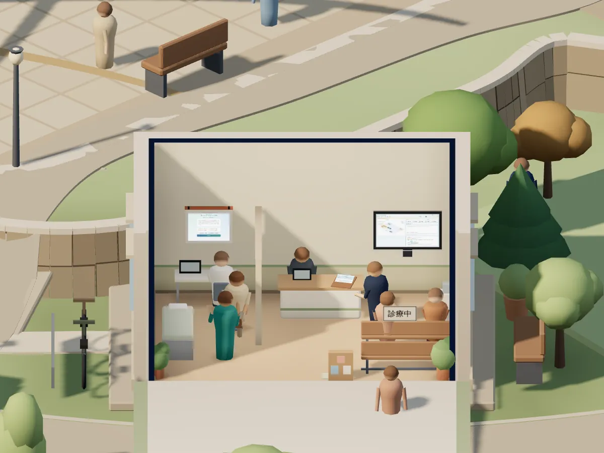
クリニック経営を学ぶ
医療経営を学ぶ
- クリニックタウン3Dクリニック経営を、1日ずつ動かして学ぶ
- ターンアラウンド12赤字クリニックを、12週で立て直す
- クリニックPMIクエスト承継直後の30日を、10問で診断する
-
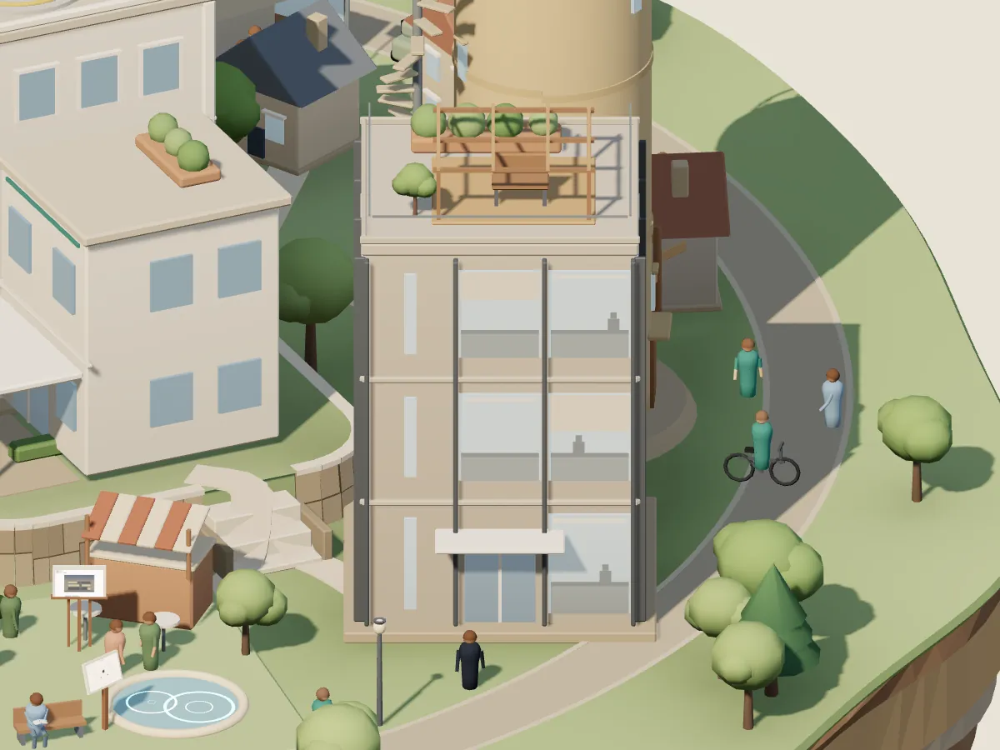
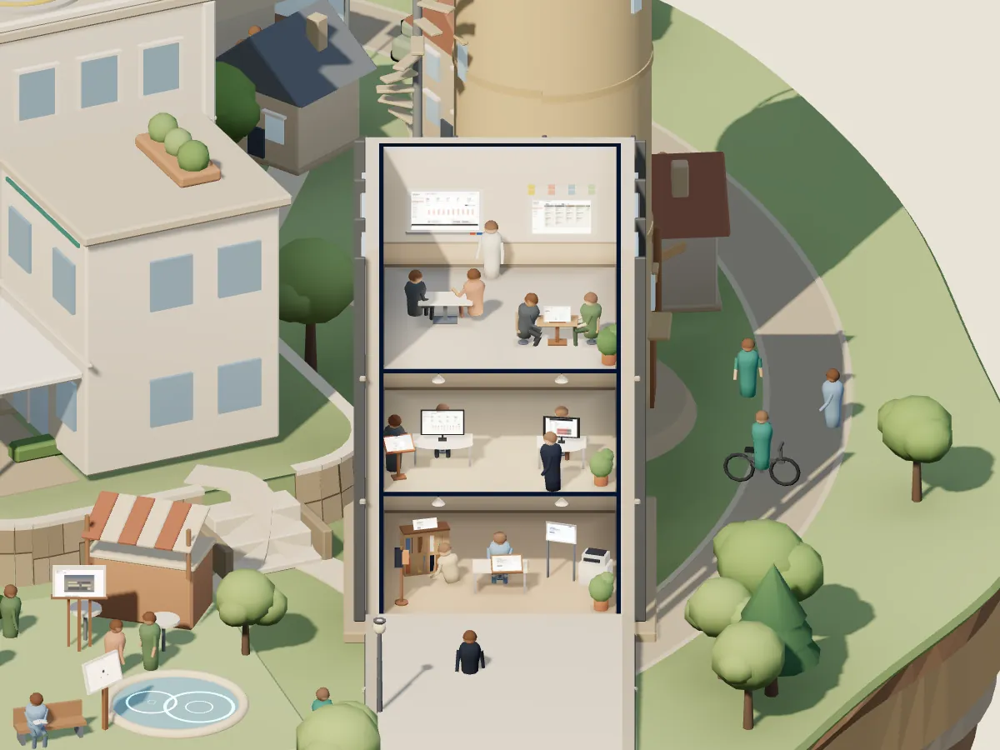
事務所経営・管理
経営・管理の実務に使う
ほかの道具6
- 面接官の手帖面接の質問を用意し、事実と印象を分けて記録する ・ 紹介のページ
- ConsultSim1診と2診で、待ち時間がどう変わるかを試す ・ 紹介とデモ
- 本部長の巡回手帖複数施設の巡回を、1冊の手帖に
- 医療管理職スターター初めて管理職になった人の、チェックリストと記入式シート
- 医療管理実務ライブラリ医療管理の実務手順と、無料テンプレート
- Reha Checklist(別のサイト)リハ部門KPIのチェックリスト(PDF・スプレッドシート) ・ 配布ページ(別のサイト)・メールアドレスの登録が必要
-
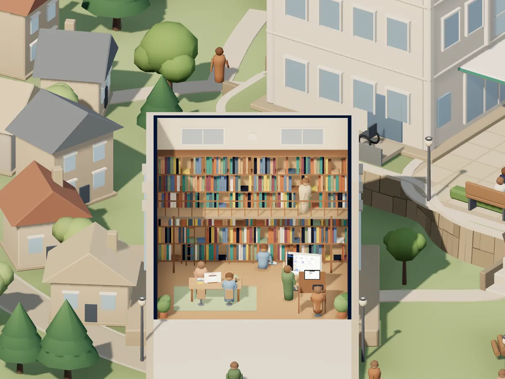
図書館学習
学習を続ける
- HIM Quiz診療情報管理士の模擬試験、全12章・360問 ・ 紹介のページ
- StudyBoard複数科目の学習を、1枚のボードで続ける ・ 紹介のページ
- Daily English瞬間英作文を、通勤の合間に ・ 紹介のページ
-
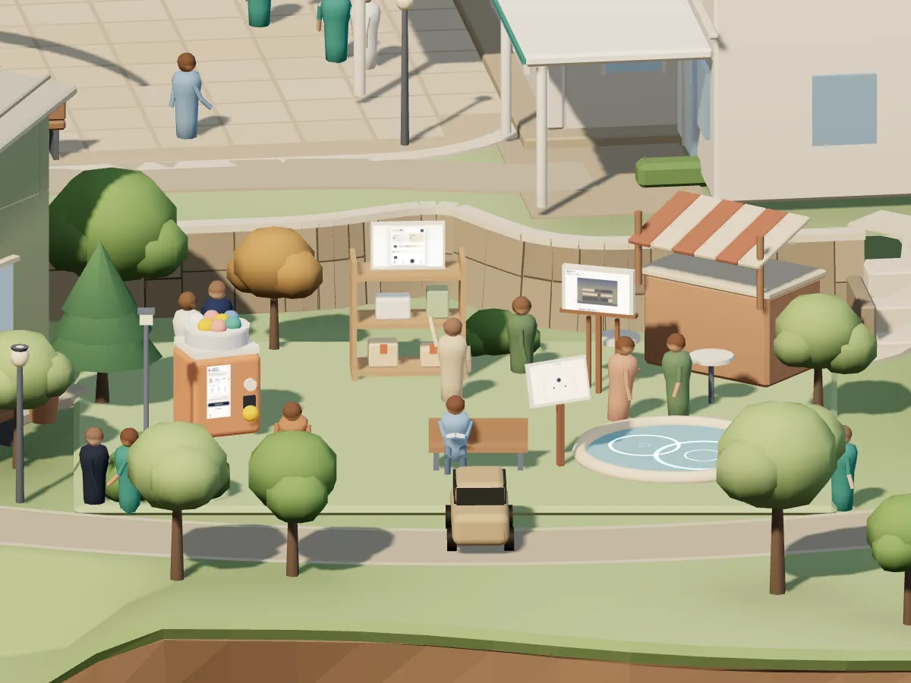
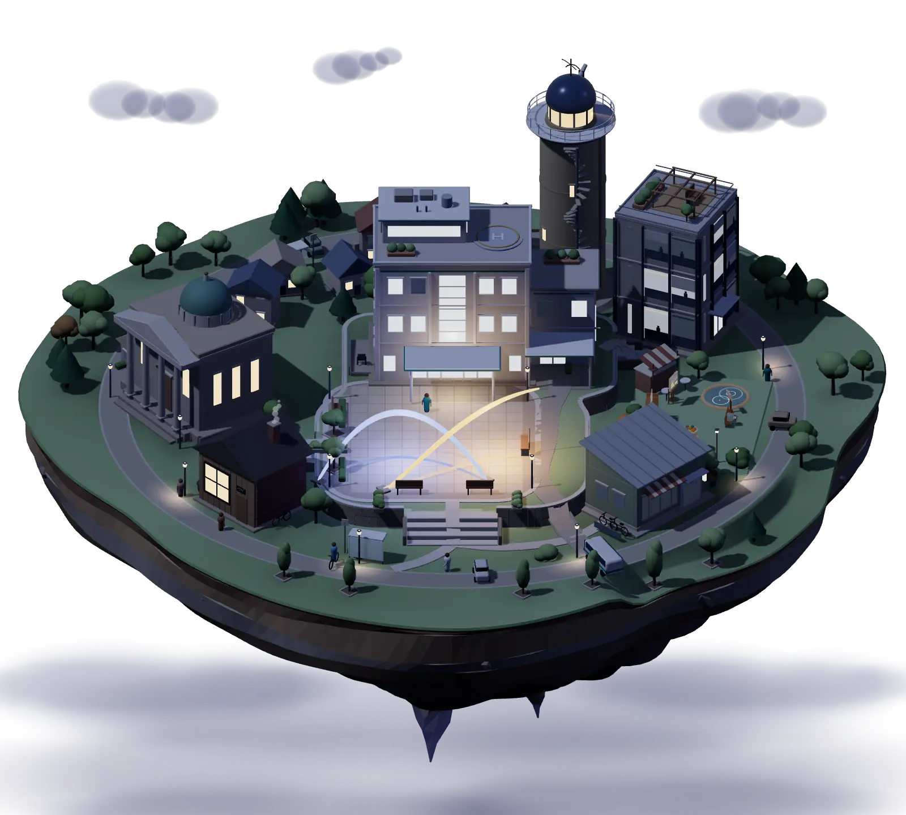